摘要：IDEA 集成开发环境、Linux 开发工具、Git 版本控制、项目管理/构建工具等。
[TOC]
版本控制的主要功能有备份、回滚、分支管理。
三种状态：
git checkout -- readme.txt 撤销readme.txt文件在工作区的全部修改。git reset HEAD readme.txt 可撤销暂存区的修改，重新放回工作区。三个工作区域/工作流：
git add把文件修改（快照）添加到暂存区；git commit提交更改到仓库，实际上就是一次性提交暂存区的所有修改（快照）到当前分支。与SVN的区别。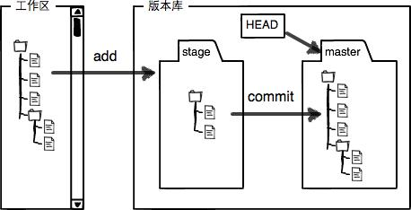
基本的 Git 工作流程如下：
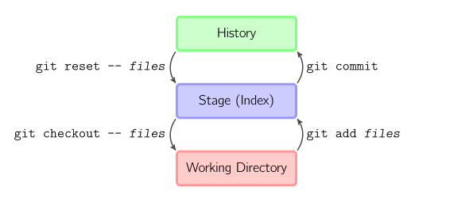
HEAD 是一个对当前检出记录的符号引用，指向正在其基础上进行工作的提交记录。
实际上，通常情况下HEAD指向分支名，分支名指向当前分支上最近一次提交记录。
分离 HEAD 就是让其指向某个具体的提交记录而不是分支名。
#在命令执行前的状态如下所示：HEAD -> main -> C1
git checkout C1
#变成了：HEAD -> C1
相对引用：用 ^、~<n> 将HEAD向上移动 1 个、n个提交记录，可代替
git checkout <commit id>
git checkout main^
git checkout HEAD~1 #HEAD~1：历史版本库最新提交的第一父提交
git clone <server url> [directory name]：克隆远程仓库到本地目录，默认为./。<server url> 如https://github.com/Snailclimb/test.git或username@host:/path/to/repository.git。Git支持多种协议，默认的git://使用ssh，https速度慢，每次推送都必须输入口令，但某些公司内部只开放http端口。
git fetch
git init：在当前目录中初始化仓库，创建一个名为 .git 的子目录（Git用来跟踪管理版本库的）。
git pull：拉取远程仓库；获取（fetch）并合并（merge）远程改动，覆盖本地工作目录。Git会自动合并已有的变更点；但如果远程数据库和本地数据库的同一个地方都发生了修改，无法自动判断要选用哪一个修改，就会发生冲突，需要手动修正冲突。
--progress：
pull —progress origin: Fast-forward
git push origin [branch name]：将分支在本地仓库的提交历史推送/共享到远程仓库，二者保持同步。push前应先合并（pull），否则push将被拒绝。
--force-u：把本地的master分支内容推送到远程新的master分支，并关联起来；git remote
-v：查看远程库信息add origin <server>：关联本地仓库和远程仓库，并指定远程仓库别名，origin是默认习惯命名，如https://github.com/Snailclimb/test.git>，可用origin指代远程仓库地址rename origin orirm origin：删除远程库，解除了本地和远程的绑定关系，并不是物理上删除了远程库。# 丢弃在本地的所有改动与提交：从服务器获取最新的版本历史，并将本地主分支指向它
git fetch origin
git reset --hard origin/master
git add <filename>：添加文件到暂存区；修改文件来手动合并冲突后，标记为合并成功
git add -i：交互式添加文件到暂存区describe：显示离当前提交最近的标签。git mv README.md README：对文件重命名，相当于mv README.md README、git rm README.md、git add README 三条命令的集合git restore：把文件从缓存区撤销，回到未被追踪的状态。rm test.txt：删除文件后，工作区和版本库不一致。先手动删除文件，然后使用git rm <file>和git add<file>效果是一样的。
git status 显示哪些文件被删除了。git rm <filename> ，从暂存区域移除，然后提交；git checkout -- test.txt，用版本库中的最新版本，替换工作区的。git diff [<source commit id>] <target commit id> [--] [<path>…]：显示提交间的差异
<source commit id>：默认为工作目录，可为branch名等；
--cached表示Index时，显示暂存区与HEAD的差异<target commit id>：默认为暂存区，指定版本库（默认为HEAD）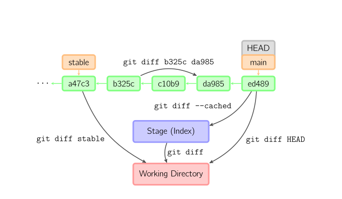
git grepgit log --<option> ：列出所有提交
-p 或 --patch：按 补丁 的格式 显示每次提交引入的差异--stat--shortstat--name-status：显示新增、修改、删除的文件清单。
--name-only--pretty：使用其他格式显示历史提交信息，可选 oneline、short、full、fuller 和 format。--abbrev-commit--oneline：–pretty=oneline –abbrev-commit 合用的简写，压缩后的每一条提交记录只占一行的输出。--graph：在日志旁以 ASCII 图形显示分支与合并历史。--relative-date-<n> ：只显示最近的n条提交。—since 和 —after：指定时间后的提交，可取2.weeks、2008-01-15—until 和—before：指定时间前的提交。—author：作者匹配指定字符串。—committer—grep：搜索提交说明中的关键字。-S
[—] <path>：指定某些文件或目录的路径。—no-merges ：隐藏合并提交git show：用于显示各种类型的对象。git stash：可把当前工作现场“储藏”起来，等以后恢复现场后继续工作。查看工作区，就是干净的（除非有没有被Git管理的文件），因此可以放心的创建分支来修复bug了。git status：查看当前文件状态git branch <branch name>：默认创建分支，基于这个提交及它所有的父提交进行新工作；分支是用来将特性开发绝缘开来的。git branch：查看所有分支，，当前分支前面会标一个*号。
-d <branch name>：删除分支；即删除分支指针。-f main HEAD~3：让分支指向另一个提交，将分支强制移动到指定位置；将 main 分支强制指向 HEAD 的第 3 级父提交。git cherry-pick：”复制”一个提交节点并在当前分支做一次完全一样的新提交。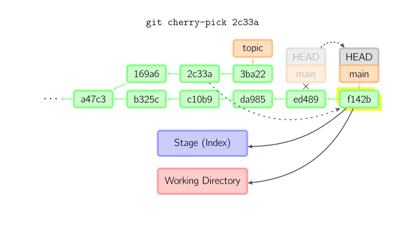
git commit ：给暂存区生成快照，并提交。每完成一个功能就提交一次，不要累计代码。
提交时，用暂存区的文件创建一个新提交，并把此时的节点（HEAD）设为父节点，把当前分支（顺移）指向新的提交节点。
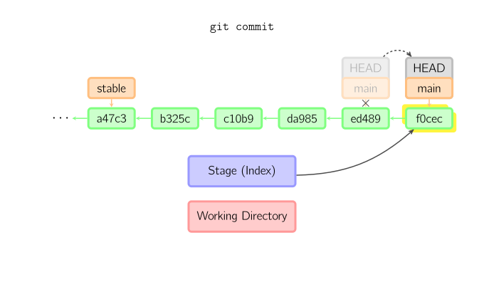
若当前分支stable是某次提交的祖父节点，提交后生成了1800b。stable分支就不再是main分支的祖父节点。此时，merge是必须的。
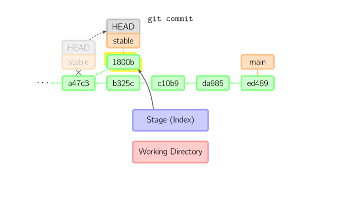
当HEAD处于分离状态（不依附于任一分支）时，commit不会更新任何已命名的分支。可认为是在更新一个匿名分支。一旦切换到别的分支（如main），那么这个提交节点再也不会被引用到，会被丢弃掉。想保存这个状态，可用命令git checkout -b <name>来创建一个新分支。
如图：
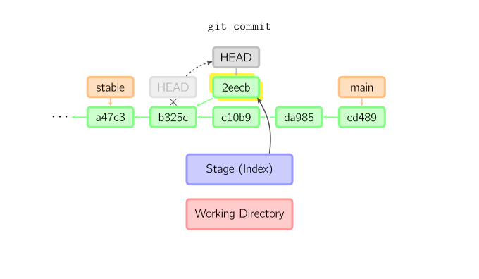
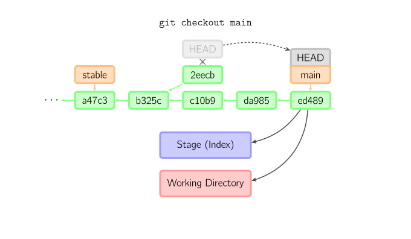
-m "备注"
-a/add：跳过暂存区直接提交代码到仓库；自动把所有已跟踪过的文件暂存起来一并提交，从而跳过 git add 步骤。
--amend：更改一次提交，用与当前提交相同的父节点进行一次新提交，旧的提交会被取消。添加漏掉的文件或修改提交信息，尝试重新提交.
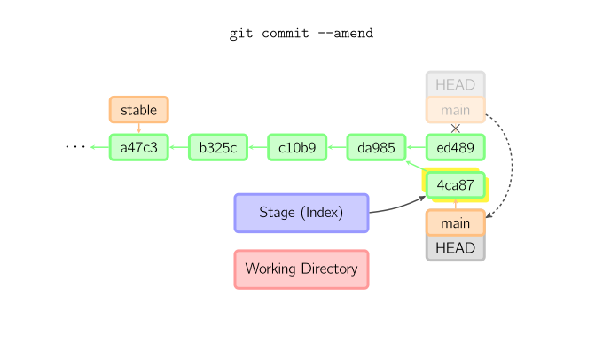
git checkout <branch name>：切换分支，即HEAD标识会移动到指定分支，暂存区域和工作目录中的内容会和HEAD对应的提交节点一致。新提交节点（a47c3）中的所有文件都会被复制（到暂存区域和工作目录中）；只存在于老的提交节点（ed489）中的文件会被删除；不属于上述两者的文件会被忽略，不受影响。
-b <new branch> <source branch> ：在source 分支（默认为当前分支）上创建分支，并切换过去。git checkout <>：如果既没指定文件名，也没指定分支名，而是一个标签、远程分支、SHA-1值或是像main~3类似的东西，就得到一个匿名分支，称作detached HEAD（被分离的HEAD标识）。这样可方便地在历史版本间互相切换。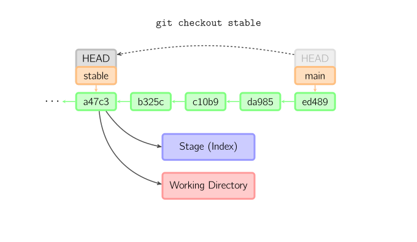
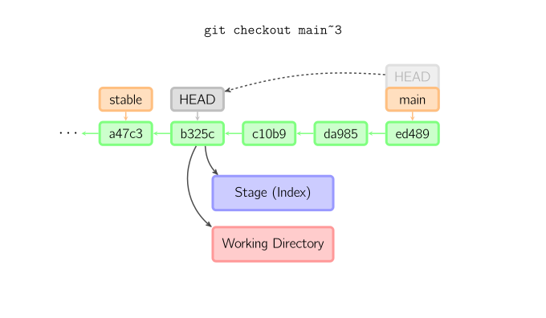
git checkout [HEAD] -- <filename>：
-p选项）时，用于将指定历史提交节点（如果没有指定，默认为暂存区域）中的文件，拷贝到工作目录，并加到暂存区域中。用来丢弃本地修改。git merge <branch name>：把不同分支合并起来。合并前，索引必须和当前提交相同，否则可能会有冲突。每次 merge 前先 pull 远程分支。
git status 检查冲突的文件；
如果另一个分支是当前提交的祖父节点，那么什么也不做。
git merge main如果当前提交是另一个分支的祖父节点，就导致fast-forward合并。指向只是简单的移动，并生成一个新的提交。
git merge other否则就是一次真正的合并。默认把当前提交（ed489 ）和另一提交（33104）及他们的共同祖父节点（b325c）进行一次三方合并。结果先保存当前目录和索引，然后和父节点（33104）一起做一次新提交。
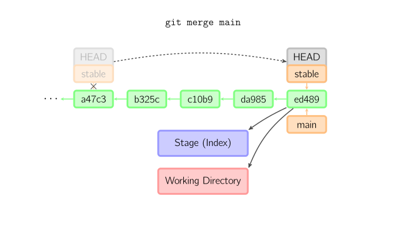
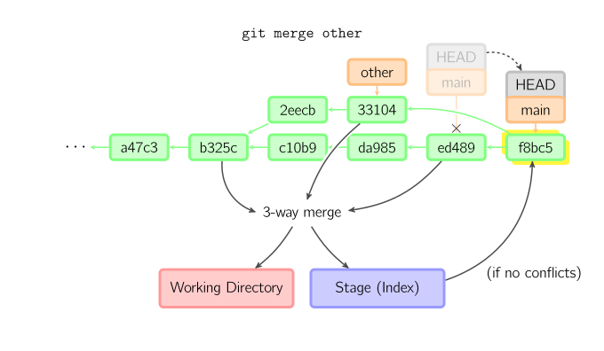
--no-ff参数：表示不执行快进式（fast-forward、plain）合并，不在当前分支留有指定分支的演进过程。

git rebase main：合并分支。在当前分支（topic）上重演另一个分支（main）的历史，提交历史是线性的。 本质上是线性化的自动的cherry-pick。注意旧提交（169a6、2c33a）没有被引用，将被回收。
如图：
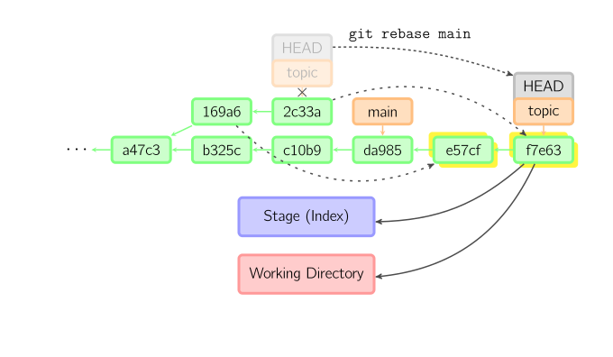
--onto：限制回滚范围。在main分支上重演当前分支从169a6以来的最近几个提交，即2c33a。
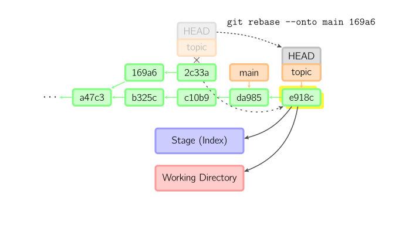
git reflog：查看命令历史，操作类型、commit id、注释。git reset --<mode> [<commit id>, 默认HEAD, origin/master] [file]：作用于索引，分支指向不变；撤销暂存区的修改，重新放回工作区，用指定提交（默认为HEAD）覆盖暂存区。“改写历史”，原来指向的提交记录就跟从来没有提交过一样。 对远程分支无效。？省略文件名表示回退所有。
-- filenamegit add files；相当于checkout file；更新索引。--soft ：作用于仓库，回退到指定版本commit前的状态？。如果还要提交，直接commit即可。--mixed：默认方式。--hard： 作用于索引和工作目录。 #查找commit id
git reflog
#恢复到因reset回退的commit
git reset --hard <commit id>
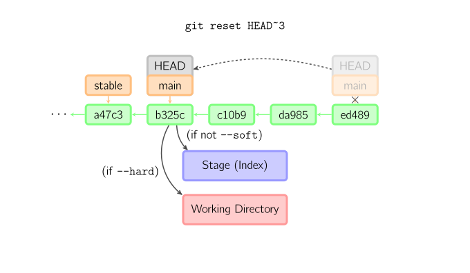
git revert：新提交记录引入更改用来撤销某个提交。回退状态。git switch <branch name>：切换分支
-c dev：创建并切换到新的dev分支git tag <tag name> <commit id>：在指定提交上创建标签
-d：删除标签 #一次性推送全部尚未推送到远程的本地标签
git push origin —tags
#标签已经推送到远程，要删除远程标签就麻烦一点，先从本地删除，然后从远程删除
git tag -d v0.9
git push origin :refs/tags/v0.9
gitk：内建的图形化 gitgit config color.ui true：彩色的 git 输出git config format.pretty oneline：显示历史记录时，每个提交的信息只显示一行git config
--global参数，表示这台机器上所有的Git仓库都会用此配置；--global user.email "you@example.com"：配置邮件；--global user.name "Your Name" 配置用户名，否则后面的commit、push到远程库都会失败。git config
--global alias.br branch：配置别名--global alias.ci commit--global alias.co checkout--global alias.st status策略：
origin/master 主分支： 用于正式发布、线上生产环境。用于存放经过完全测试、代码reivew，已经完全稳定、任何时刻用户可用的代码，应随时保持代码的清洁。分支版本的设立、master版本的merge，统一由管理员操作。发布后需打上 tag。
develop 开发分支：用于本地日常开发环境，用于开发者存放基本稳定代码、生成代码的最新隔夜版本（nightly）。
feature/topic 功能分支： 通常为即将发布或未来发布版开发新的功能。合并到develop。分支版本的merge，一般先在本地仓库的feature分支merge到本地仓库的develop分支，然后将develop分支push到服务器上。
>>> git checkout develop
# 回到develop分支
>>> git merge --no-ff feature-discuss
# 把做好的功能合并到develop中
>>> git branch -d feature-discuss
# 删除功能性分支
>>> git push origin develop
# 把develop提交到自己的远程仓库中
feature/weixin_recharge 临时功能分支：按照功能点（而不是需求）命名， 用于开发新功能，预发布成功后删除。
release-1.2 预发布分支：用于线上测试环境，待发布版本的提测及细小修改、修复 bug，严禁增加大的新features。实际开发中用的较少。
fixbug-0.1、hotfix/#1 、issue-101 临时修补分支：通过平台生成的问题编号来命名 ，生产环境紧急bug修复。可以基于master分支，必须合并回develop和master分支。与发布分支很相似。临时分支用完删除。
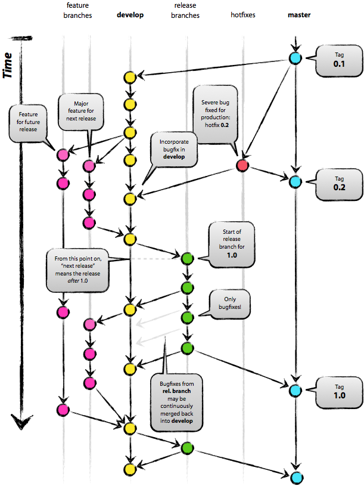
以开发功能分支 feature/search-recommend为例，工程师需要做以下步骤：
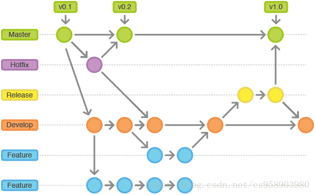
直接下载安装，一路下一步，建议安装在非系统盘。
一般安装包会默认勾选Add to PATH选项，可以不再单独配置系统环境变量。
# 在 cmd 控制台查看环境变量配置是否成功
node -v
npm -v
听说有墙下载慢，可以试试迅雷或者梯子代理
直接安装，可以右键 -> Git Bash Here 查看 Git 命令行
# 在 cmd 控制台查看环境变量配置是否成功
git --version
用于本地和 GitHub 通信
git config --global user.name "your_name"
git config --global user.email "your_email@example.com"
# 创建秘钥
ssh-keygen -t rsa -C "your_email@example.com"
# 三次回车
Generating public/private rsa key pair.
Enter file in which to save the key (/c/Users/you/.ssh/id_rsa): [Press enter]
Enter passphrase (empty for no passphrase): [Type a passphrase]
Enter same passphrase again: [Type passphrase again]
# 创建成功
Your identification has been saved in /c/Users/you/.ssh/id_rsa.
Your public key has been saved in /c/Users/you/.ssh/id_rsa.pub.
The key fingerprint is:
01:0f:f4:3b:ca:85:d6:17:a1:7d:f0:68:9d:f0:a2:db your_email@example.com
#clip < ~/.ssh/id_rsa.pub
C:\Users\Cooper\.ssh\id_rsa.pub
头像->Settings->SSH and GPG keys->New SSH key 中添加 SSH key 密钥。这是本地主机和 GitHub 相互识别的标志# 在 Git Bash 中测试
ssh -T git@github.com
# 表示链接成功
Hi your_name! You've successfully authenticated, but GitHub does not provide shell access.
# Github Desktop 报错
# github desktop fatal: unable to access Failed to connect to github.com port 443: Timed out
# 设置 ssh 连接 github
# C:\Users\Cooper\.ssh\config 中添加：
Host github.com
Hostname ssh.github.com
Port 443
User git
# C:\Users\Cooper\.ssh\.gitconfig
[user]
name = {name}
email = {username@mail.com}
[color]
ui = true
[core]
autocrlf = false
[filter "lfs"]
clean = git-lfs clean -- %f
smudge = git-lfs smudge -- %f
process = git-lfs filter-process
required = true
[http]
sslverify = true
sslBackend = openssl
[credential]
helper = wincred
[https]
sslverify = true
[commit]
gpgsign = false
# C:\Users\Cooper\.ssh\known_hosts，github 2023年重新设置了秘钥，
github.com ssh-rsa AAAAB3NzaC1yc2EAAAADAQABAAABgQCj7ndNxQowgcQnjshcLrqPEiiphnt+VTTvDP6mHBL9j1aNUkY4Ue1gvwnGLVlOhGeYrnZaMgRK6+PKCUXaDbC7qtbW8gIkhL7aGCsOr/C56SJMy/BCZfxd1nWzAOxSDPgVsmerOBYfNqltV9/hWCqBywINIR+5dIg6JTJ72pcEpEjcYgXkE2YEFXV1JHnsKgbLWNlhScqb2UmyRkQyytRLtL+38TGxkxCflmO+5Z8CSSNY7GidjMIZ7Q4zMjA2n1nGrlTDkzwDCsw+wqFPGQA179cnfGWOWRVruj16z6XyvxvjJwbz0wQZ75XK5tKSb7FNyeIEs4TT4jk+S4dhPeAUC5y+bDYirYgM4GC7uEnztnZyaVWQ7B381AK4Qdrwt51ZqExKbQpTUNn+EjqoTwvqNj4kqx5QUCI0ThS/YkOxJCXmPUWZbhjpCg56i+2aB6CmK2JGhn57K5mj0MNdBXA4/WnwH6XoPWJzK5Nyu2zB3nAZp+S5hpQs+p1vN1/wsjk=
# 重新生成 SSH 秘钥，并添加到 github
# 生成 GPG
# 改用 ssh 连接 github
git remote set-url origin git@github.com:FaceShawn/Job2021.git
使用迅雷下载 https://desktop.github.com/ 会快点
项目最好存储在纯英文路径下
一般在某一文件夹，如使用 IDE 创建项目文件夹后，将此项目文件夹创建为 Git 项目。
此时项目中应有 /.git 文件夹，表示这是一个 git 项目，操作是将其添加入本地仓库。
fork 指将别人的项目拷贝到自己的账户中。
clone 指将在 Github 网站上的项目克隆到本地计算机的仓库中，默认是自己的项目，可通过 URL 克隆其他用户的项目。
克隆时本地文件夹可重命名。
默认只是将项目移出本地仓库，勾选后才删除项目到回收站。
将本地项目移动到其它路径下
在本地仓库 commit to master 未 push 到远程仓库
undo
已 push 到远程仓库
History->右键->Reserve this commit commit to master push
使用git时出现：warning: LF will be replaced by CRLF
代理错误：Git push时报错：Failed connect to github.com:443; No error和The remote end hung up unexpectedly
git config --global http.proxy "localhost:1080"
git config --global https.proxy "localhost:1080"
git config --global https.proxy 127.0.0.1:1080
git config --global http.proxy ""
git config --global http.proxy 127.0.0.1:8087
git config --list --show-origin
git config --global --unset http.proxy
git config --global --unset https.proxy
git config --add remote.origin.proxy "http://[yourproxy]:[yourport]"
git config http.sslverify false
git config --global http.sslverify false
ssh -T git@github.com